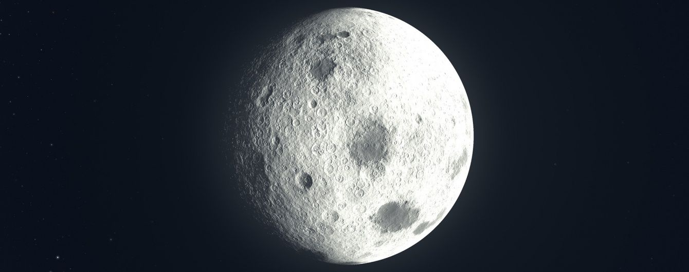
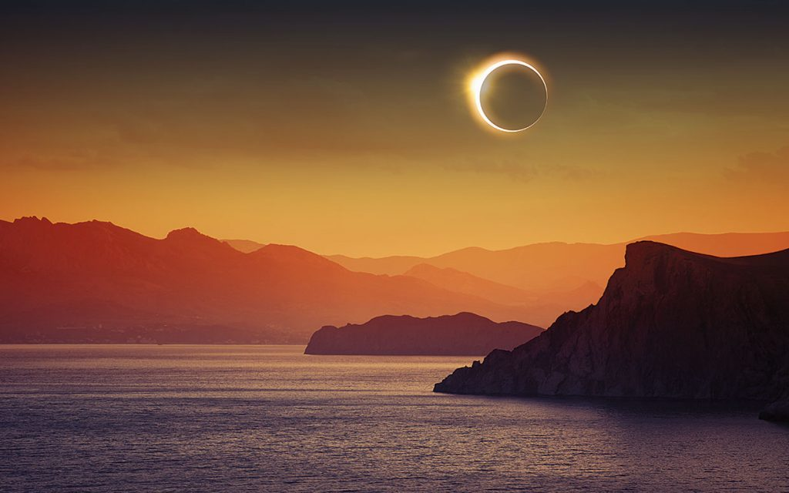
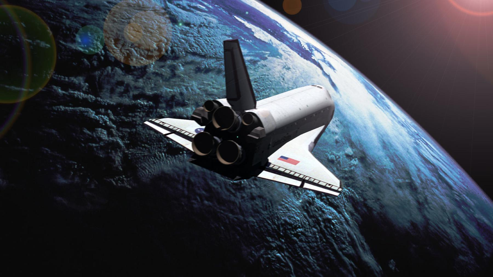

Солнце — ближайшая к Земле звезда. Солнце находится на расстоянии около 26 000 световых лет от центра Млечного Пути и вращается вокруг него, делая один оборот за 225—250 миллионов лет.

Атмосфера практически отсутствует. Поверхность Луны покрыта реголитом — смесью тонкой пыли и скалистых обломков, образующихся в результате столкновений метеоритов с лунной поверхностью.
Когда будет солнечное затмение?

Со́лнечное затме́ние — астрономическое явление, которое заключается в том, что Луна закрывает (затмевает) полностью или частично Солнце от наблюдателя на Земле. Солнечное затмение возможно только в новолуние, когда сторона Луны, обращённая к Земле, не освещена, и сама Луна не видна. Затмения возможны, только если новолуние происходит вблизи одного из двух лунных узлов (точки пересечения видимых орбит Луны и Солнца), не далее, чем примерно в 12 градусах от одного из них.
Полетим?

В настоящее время единственной используемой с целью космического туризма является Международная космическая станция (МКС). Полёты осуществляются при помощи российских космических кораблей «Союз» на российский сегмент МКС.